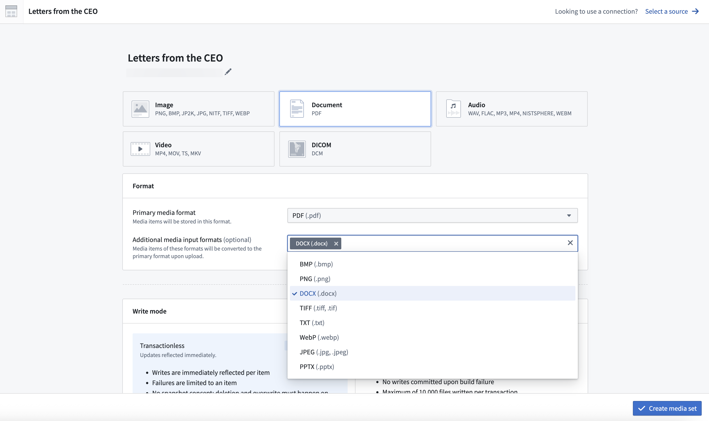
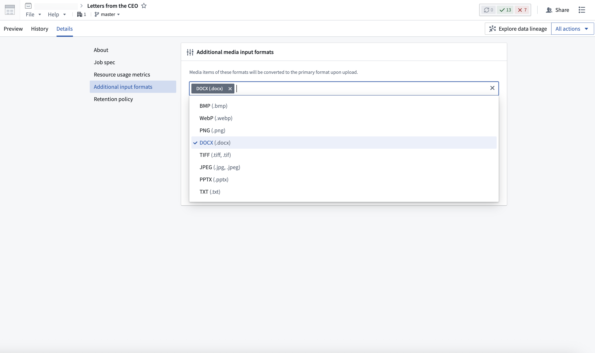
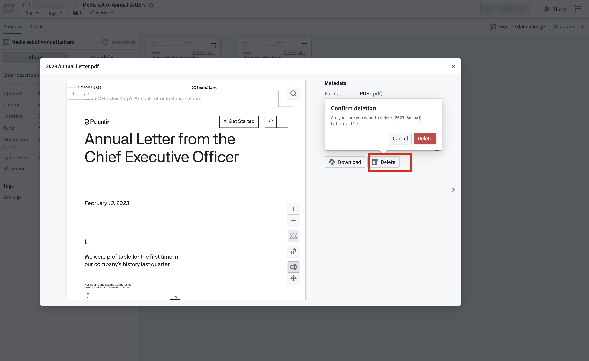
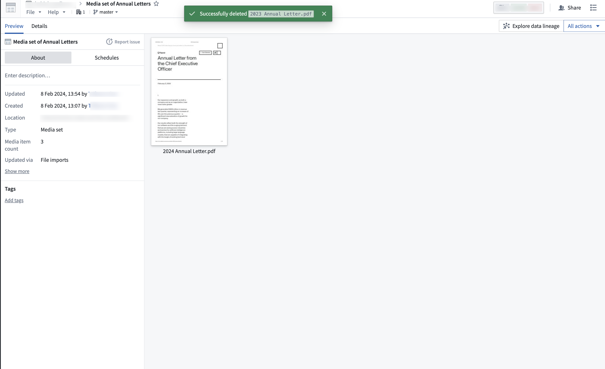

Media sets enable you to store, transform, and work with your media files. Media sets can be utilized across the platform to power your workflows.
For more information on how to integrate media into your workflows, follow the relevant documentation:
For walkthroughs on building an end-to-end workflow with media, see example workflows.
A media set has a schema type, which defines the type of files that can be stored in the media set, such as documents, images, or audio. Every media set also has a primary format, which specifies the file format that all files in the media set must be.
The file formats supported in media sets are as follows:
.wav).flac).mp3).mp4).sph).webm).dcm).pdf).docx) (as additional input format).pptx) (as additional input format).txt) (as additional input format).eml).png).jpg, .jpeg).jp2).bmp).tiff, .tif).nitf).xlsx).mp4).mov).ts).mkv):::callout{theme="warning" title="PDF support"} PDF files that require proprietary features to view or are protected by passwords, digital signatures, or encryption are not supported. :::
:::callout{theme="warning" title="XLSX Limitations"} Certain advanced XLSX features (such as complex formulas), and embedded files including images are not supported. :::
Media sets may also have additional input formats, which allow for other file formats to be accepted into the media set. Upon upload, these files will automatically be converted to the primary format. Only specified additional input formats will be accepted on upload.
Additional input formats can be configured during the creation of a media set, as well as under the media set details tab.
Additional input formats cannot be specified for virtual media sets.


Some file types can only be processed as additional input formats. For example, DOCX (.docx), PPTX (.pptx), and TXT (.txt) files can be uploaded to PDF (.pdf) media sets as additional input file formats, even though they are not supported as primary file formats.
Note that not all primary formats support additional input formats.
A media set can also be configured to be a multimodal media set, which allows for any file format to be uploaded. This is useful for workflows that require files of multiple media schema types.
Multimodal media sets have a few limitations. In-platform preview is only available for media items using supported schema types. Preview is also not supported for additional input formats when using virtual multimodal media sets. Access patterns work with media items that use supported schema types, but you will need to validate or filter their schemas first. Media items with unsupported schema types cannot be used with access patterns.
Items in media sets can be referenced using media references. Media references enable you to use a media item in Foundry without having to make copies of the media item itself.
You can use media references to reference media set items in datasets. This is useful for associating media items with metadata or other information in a tabular format. For example, you can associate the original PDF with its file name, page count, and extracted text as additional columns.
You can also use media references as inputs to model adapters for batch inference pipelines.
To produce a list of media references for your media set, use the Convert media set to table rows transform in Pipeline Builder. You can also produce media references in Python Transforms by importing the transforms-media library and calling the list_media_items_by_path_with_media_reference method.
Even if a path has been overwritten by a newer upload, a saved media reference to the "overwritten" media item will continue to render and reference the original item.
A media reference can point to one of two locations:
list_media_items_by_path_with_media_reference method described above. Media items support the full range of media transforms and expressions in Pipeline Builder, such as PDF text extraction and OCR.If you need to use files from a dataset with Pipeline Builder media transforms, first load the files into a media set (for example, with a Python transform using MediaSetOutput), then produce media references from that media set instead of from the source dataset.
from pyspark.sql import functions as F
from transforms.api import transform, Input, Output
from transforms.mediasets import MediaSetInput
@transform(
metadata_out=Output("{YOUR_OUTPUT_METADATA_DATASET}"),
mediaset_in=MediaSetInput("{YOUR_MEDIA_SET_RID}")
)
def compute(ctx, mediaset_in, metadata_out):
media_references = mediaset_in.list_media_items_by_path_with_media_reference(ctx)
column_typeclasses = {'mediaReference': [{'kind': 'reference', 'name': 'media_reference'}]} # Enables in-line thumbnails in dataset
metadata_out.write_dataframe(media_references, column_typeclasses=column_typeclasses)
:::callout{theme="warning" title="Soft deletion"} When a media item is deleted in the platform, it will no longer be visible, but the raw data is not permanently deleted. The media item can still be accessed if it is directly linked. :::
You can delete media items from a media set by selecting the media item that you want to delete, and selecting the Delete action. To prevent accidental deletion, this action will require you to select Delete in the pop-up again to confirm your intention of deleting a media item.

Once you have successfully deleted the item, the media set will refresh with a success message. You can now view the media set without the deleted media item.

:::callout{theme="warning" title="Deletion limitations"} Media item deletion is not supported for media sets that are updated through a build pipeline. :::
For further information on media sets, visit: